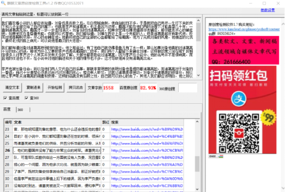

《三国演义》中诸葛亮因什么原因打压李严，就因他受刘备看重？
我们喜欢看小说的人都应该知道，刘备伐吴兵败之后，在白帝城病倒，他自知时日不多，于是就把自己用尽一生打下来的天下和儿子全部交给了自己的属下，也就是李严和诸葛亮。也正是因为这样，蜀国才能在他们两的治理下才能昌盛几十年，一直到诸葛亮死后，蜀国才一步一步走向消灭。刘备当时对诸葛亮说，如果你觉得刘禅他值得你去辅佐，那你就去尽心的辅佐他，如果他实在是昏庸无能，你就可以代替他，我们都知道，刘禅在历史上是一个无能的人，但是诸葛亮却没有取代他，反而对他是鞠躬尽瘁，尽心的去辅佐他。他最终把自己的全部的心血都献给了给蜀国，他为了完成刘备的夙愿，他接连的北伐，最终北伐的路上病死，可以说他是蜀汉的大忠臣。
我们都知道刘备对诸葛亮特别的的信任，他之前说过，有了他自己就仿佛是鱼儿有了水一样，那么如果刘备他真的对诸葛亮十分的放心的话，那他为什么又要把李严也弄成蜀国的二把手，他们两个人都留下来辅佐刘禅，这样做的意义何在呢？我相信很多人对李严这个人其实并没有太多的了解，大部分都是听说过诸葛亮，因为李严在小说中，他的名号并不是很响亮，而且他的仕途也不长，在小说中对他的描述和关于他的情节也不多，这才导致他并没有诸葛亮出名。
李严也被刘备任命，所以向他们两人交代自己的后事，那就非常明显的表明刘备也是提防着诸葛亮的，而诸葛亮对于刘备的一番话，自己十分清楚必须表达自己对刘禅的忠心，旁边有人听见，这就让诸葛亮很被动。刘备对于诸葛亮的很信任，所以他让李严听从诸葛亮的调遣和安排，这样的话就没有后顾之忧，自己就可以放心的去了，其他人我们都应该明白，他之所以任命李严同时去辅佐刘禅，尽管他是诸葛亮的副手是他的下级，但这样的安排也会对诸葛亮起着牵制的作用，让他不能随心所欲。
刘备在他去世前就作出这样的安排，所有人都明白他的意思，包括诸葛亮，但是诸葛亮他并不能，拒绝这样的安排，而且他也不能把李严当时就怎么样，他只能忍耐等待合适的机会，所以在刘备去世后没多久，诸葛亮他瞅准了机会，把李严调走免了他的官，那他明知道刘备的意思，他为什么还会违反他的意愿去做？或者他是有其他的什么目的？
在小说中，我们都知道刘备还在世的时候，领兵作战的是关羽这些大将军们，而诸葛亮就负责他们的供给，并且分析当前的形势，从而去献计献策，再刘备去世之后，他们的蜀国并没有了能力非常出众的将军。诸葛亮北伐的时候，只能他自己去率领部队，可是军队后勤供给这一方面就没有人负责，况且蜀国的粮草并不充沛，这是他最为担心的一个问题，因为他多次北伐，就是因为缺少粮草才被迫撤兵的，所以诸葛亮想到了李严，既然刘备安排李岩给自己当副手，那正好就把粮草这个难题让李岩去处理。
但是李严就在这这件事情上犯下的错误，因为李严负责给他们押运粮草，但粮草并没有如时到达，诸葛亮被迫又一次撤军回来，便和李严对峙，李严说道因为下下大雨，而且道路显艰险，路又长又不好走，所以才导致了两手没能按时送达，但是诸葛亮带着部队回来的时候，李严又说，军粮十分的充足，是诸葛亮自己回来的，跟自己没有太多的关系，诸葛亮十分的生气，刘禅听从诸葛亮的建议，直接将李严开除，并且把他贬为平民，让他一辈子不得翻身，自此蜀汉政权里，便没了诸葛亮的对手，他将大权集于自己一身。
小编认为，小说中的这个情景并不是合乎常理的，因为李严他明知北伐是头等大事，他不可能明知故犯，况且这还牵扯到了诸葛亮，他把责任推卸给诸葛亮，自己怎么可能全身而退了？当时他是诸葛亮的副手，他弄出这样一个破洞百出的计划，怎么可能搬到诸葛亮。要想搬到诸葛亮，必须设一个难以解开的计策，让他没有丝毫的反抗，可能在历史上真实的事情根本就不是这样，而这件事情也许是后人杜撰而来的，所以李严到底是怎么被贬的呢？他又是是因为什么原因被贬的呢？我们就不从得知了。
